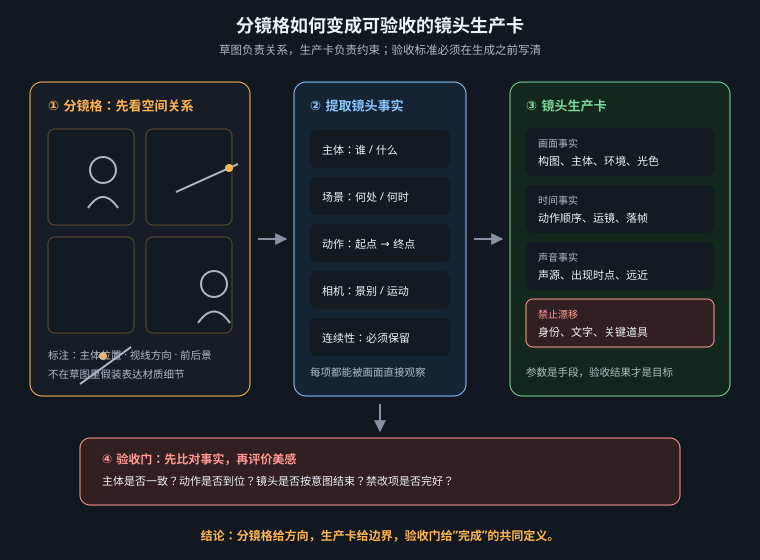

分镜不是漂亮草图集，而是一组能被生成、剪辑、复现和否决的时间设计

单张图追求“这一帧好不好看”，分镜追求“观众如何从上一帧走到下一帧”。因此，分镜师必须同时管理四种连续性：叙事连续性保证信息与因果有序；空间连续性保证人物、道具与视线没有无因跳变；运动连续性保证动作可以在剪辑点接上；视觉连续性保证角色、光色、材质和世界规则跨镜继承。
镜头生产卡就是这四种连续性的接口。它一头接剧本和导演意图，一头接首帧生成、动态模型、后期与剪辑。只写“中景，角色很紧张，镜头推进”远远不够：执行者不知道从哪推到哪、紧张如何可见、上一镜的视线朝向和下一镜的落点是什么，也就无法判断结果是偏差还是另一种合理解释。
| 连续性 | 卡片必须记录 | 可见验收 | 常见破坏 |
|---|---|---|---|
| 叙事 | 镜头功能、观众新增信息、A/B 状态 | 删镜后确有信息或情绪损失 | 重复表达、提前泄露、反应先于原因 |
| 空间 | 轴线、画面左右、视线、出入口、道具位置 | 相邻镜头能画出同一平面图 | 跳轴、左右镜像、门窗换位 |
| 运动 | 主体动词、相机动词、速度、起止姿态 | 尾帧与下镜首帧可动作匹配 | 动作链、瞬移、方向反转 |
| 视觉 | 角色锚点、光源、色板、材质、天气 | 灰度、轮廓与高光逻辑保持一致 | 服装重绘、色温跳变、无来源辉光 |
景别不是强度旋钮，运镜也不是完成度装饰。每个选择都要回答一个问题：它让观众获得什么，而别的选择为什么更差？建立空间常用全景，是因为主体与环境关系必须同时可读；反应常用近景，是因为细微表演承担信息；揭示常用遮挡解除、摇镜或拉远，是因为画面边界本身在控制信息。若镜头功能不变，仅靠从 50mm 改成 35mm 或加一段环绕，并不会自动更“电影”。
| 镜头功能 | 优先手段 | 声音策略 | AI 生产建议 |
|---|---|---|---|
| 建立 | 大全景/全景，清晰地平线与入口 | 先给环境声，帮助定位 | 主体动作小，相机可慢移 |
| 识别 | 插入特写或视线匹配 | 突出一次提示音/触碰声 | 固定机位最稳，避免复杂手部链 |
| 反应 | 近景，保留眼睛与呼吸空间 | 短暂抽空音乐 | 几乎静止，只写一个微表演 |
| 揭示 | 拉远、摇出、遮挡解除或主观切换 | 声桥可早于画面半拍 | 只选一种揭示机制 |
| 冲击 | 短镜头、方向明确的位移或硬切 | 瞬态声与切点同步 | 减小主体数量，别把抖动当冲击 |
| 收束 | 固定或缓拉，复现开场构图关系 | 保留尾音，不急于切黑 | 让尾态稳定，方便片尾与裁切 |
一镜通常只需要：一个叙事任务 + 一个主要主体动词 + 一个主要相机动词。主体已经进行高速位移时，相机越克制越容易读清；相机承担揭示时，主体动作越简单越稳。把两个动势同时拉满，观众失去参照系，模型也更容易重构空间。
180° 规则不是教条，而是保持画面方向的记账方法。两名角色之间、角色与目标之间或一条运动路线都能形成轴线。摄影机留在轴线同侧，角色面对方向与运动方向就保持稳定。需要跨轴时，应让摄影机在镜头内明确穿越，或先切到轴线上中性镜头，再建立新方向；不要让相邻生成镜头因为随机镜像而无意跨轴。
视线匹配同样需要成对设计：A 在画面左侧看向画右，下一镜被看对象通常放在画面右侧或至少保留相反的入画向量，让观众感觉视线抵达目标。动作匹配则要求上一镜尾态与下一镜首态共享同一动作阶段，例如“手开始下压按钮”切到“按钮被压到底”，而不是上一镜手尚在腰侧、下一镜按钮已亮。
一张合格卡片应把不会变的事实与本镜允许变化的内容分开。前者包括角色锚点、空间拓扑、轴线、光源和首尾状态；后者包括一次表演、一次运镜、次级环境运动。卡片还要写失败判据，因为“不要崩”无法指导取舍，而“右肩银扣不得镜像到左肩”可以逐帧验收。
ID: S05 VERSION: v03 DURATION: 5.0s RISK: medium NARRATIVE FUNCTION: 观众与岚同时第一次看见蓝色行星；只做揭示，不做落泪反应。 CONTINUITY IN: - 上镜 S04 尾帧：岚在画面左三分，身体朝前，视线刚转向画右。 - 红色立领制服；银扣固定在右肩；驾驶舱主光来自画面左上。 - 舷窗外尚无行星；警报由琥珀色变为静默蓝色。 START FRAME / COMPOSITION: medium over-shoulder shot, camera behind and slightly left of Lan, 50mm lens perspective, eye level; Lan occupies left third as a dark foreground silhouette; panoramic viewport fills the right two thirds; blue planet remains fully hidden beyond frame right; clean upper-right area reserved for reveal. SUBJECT MOTION: 岚只缓慢抬起下巴约 8°，肩膀与双手保持不动；不转脸看镜头。 CAMERA MOTION: one slow dolly-in, constant speed, total framing change about 8%; no pan, no zoom, no orbit, no handheld shake. ENVIRONMENT / END STATE: starship drift makes the planet enter from frame right and stop near the upper-right thirds intersection; star field moves as one rigid layer; planet bounce gradually adds a cool edge to Lan's cheek and collar. CONTINUITY OUT / CUT: 尾帧保持岚看向画右；下一镜 S06 为右眼极近特写，眼中蓝光位置靠画右。 声音：S04 的脉冲声桥延续 1 秒，行星出现时脉冲停止，留 0.4 秒静默。 FAIL IF: planet appears before 1.5s; silver clasp moves to left shoulder; face turns to camera; cockpit geometry changes; extra crew or text appears; camera pans or orbits; random star streaks; lens flare covers the planet; end state cannot cut to a screen-right eye close-up. DELIVERABLE: 至少 3 个候选；保留原始输入、模型/版本、seed、参数；选中后导出尾帧供 S06 对照。
卡片同时服务五个人：图像执行者锁首帧，动态执行者只做变化，剪辑师知道接点，声音设计知道静默位置，审核者有明确否决项。英文段落可直接作为生成输入，但镜头卡本身是项目规格，不应被压缩成一条散文提示词。
首帧提示负责静态事实：主体、空间、构图、光、材质、焦距感和用途。动态提示只负责时间变化：主体动作、相机运动、环境运动、速度、尾态与禁止项。把首帧内容在动态提示里重新描述一遍，可能诱使模型“重新设计”已经批准的画面。
| 层 | 首帧提示 | 动态提示 |
|---|---|---|
| 主体 | 身份、服装锚点、姿态、画面位置 | 一个动作及幅度，不重写外观 |
| 空间 | 拓扑、轴线、地平线、景别 | 哪些元素允许移动，尾态在哪里 |
| 摄影 | 焦距感、机位、光位、景深 | 一种运镜、速度、总位移 |
| 约束 | 无文字、无额外人物、左右锚点 | 不变形、不换手、不镜像、不叠加运镜 |
动态生成输入（从卡片抽取）： Lan slowly raises her chin once, no shoulder or hand movement. One restrained constant-speed dolly-in, about eight percent framing change. The ship's drift reveals the blue planet from frame right after 1.5 seconds; the star field moves as a single rigid layer. Cool planet bounce gradually appears along her cheek edge. End with Lan still looking screen-right and the planet at the upper-right thirds intersection. Keep identity, uniform, right- shoulder silver clasp, cockpit geometry, lens, key light and exposure unchanged. No pan, zoom, orbit, handheld shake, face turn, extra crew, text or star streaks.
字段堆砌会让所有约束同权，核心任务反而不突出；应把镜头功能和失败红线放在最前。运动形容词含糊，如“电影感推进”，没有方向、速度与位移。只写开头不写结尾，导致尾帧无法接下一镜。否定互相冲突，例如同时要求强烈手持与稳定构图。一张卡多次重写事实，左右锚点和光位在不同段落自相矛盾。只审单镜不审序列，每条都漂亮，却连续三镜同景别、同速度、同中心构图，节奏变成机械重复。
人物没有畸变、画面没有闪烁，只说明素材干净。若尾态视线错误、动作停在不可切的位置、揭示发生过早，仍是废镜头。审核顺序应是：镜头功能 → 接点与连续性 → 身份结构 → 运动物理 → 画质，不要先被清晰度吸引。
分镜一旦成为这种生产卡，生成模型的随机性就被关进了明确边界：它可以提出运动候选，却不能替项目重写身份、空间和叙事。下一章将从镜头的另一端——观众的视觉注意与摄影机立场——解释为什么这些边界有效。